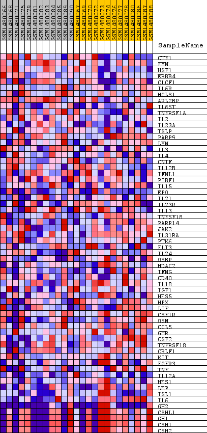
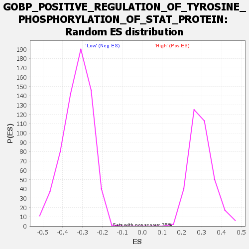

Profile of the Running ES Score & Positions of GeneSet Members on the Rank Ordered List
| Dataset | WG6v3.CPT1A.cls#High_versus_Low.CPT1A.cls#High_versus_Low_repos |
| Phenotype | CPT1A.cls#High_versus_Low_repos |
| Upregulated in class | Low |
| GeneSet | GOBP_POSITIVE_REGULATION_OF_TYROSINE_PHOSPHORYLATION_OF_STAT_PROTEIN |
| Enrichment Score (ES) | -0.6402065 |
| Normalized Enrichment Score (NES) | -1.956714 |
| Nominal p-value | 0.0 |
| FDR q-value | 0.015227572 |
| FWER p-Value | 0.109 |
| SYMBOL | TITLE | RANK IN GENE LIST | RANK METRIC SCORE | RUNNING ES | CORE ENRICHMENT | |
|---|---|---|---|---|---|---|
| 1 | CTF1 | CTF1 | 482 | 0.100 | -0.0005 | No |
| 2 | FYN | FYN | 686 | 0.086 | 0.0101 | No |
| 3 | HSF1 | HSF1 | 885 | 0.077 | 0.0188 | No |
| 4 | ERBB4 | ERBB4 | 1051 | 0.071 | 0.0276 | No |
| 5 | CLCF1 | CLCF1 | 1184 | 0.067 | 0.0372 | No |
| 6 | IL6R | IL6R | 2274 | 0.045 | -0.0079 | No |
| 7 | HCLS1 | HCLS1 | 2996 | 0.036 | -0.0362 | No |
| 8 | ARL2BP | ARL2BP | 3036 | 0.036 | -0.0294 | No |
| 9 | IL6ST | IL6ST | 4296 | 0.024 | -0.0885 | No |
| 10 | TNFRSF1A | TNFRSF1A | 4824 | 0.021 | -0.1106 | No |
| 11 | IL2 | IL2 | 5667 | 0.015 | -0.1504 | No |
| 12 | IL23A | IL23A | 5964 | 0.014 | -0.1622 | No |
| 13 | TSLP | TSLP | 6079 | 0.013 | -0.1648 | No |
| 14 | PARP9 | PARP9 | 6082 | 0.013 | -0.1616 | No |
| 15 | LYN | LYN | 6971 | 0.010 | -0.2051 | No |
| 16 | IL3 | IL3 | 7839 | 0.007 | -0.2482 | No |
| 17 | IL4 | IL4 | 8145 | 0.006 | -0.2626 | No |
| 18 | CNTF | CNTF | 8217 | 0.005 | -0.2650 | No |
| 19 | IL12B | IL12B | 8416 | 0.005 | -0.2740 | No |
| 20 | IFNL1 | IFNL1 | 8720 | 0.004 | -0.2887 | No |
| 21 | PIBF1 | PIBF1 | 10651 | -0.002 | -0.3879 | No |
| 22 | IL15 | IL15 | 10838 | -0.003 | -0.3969 | No |
| 23 | EPO | EPO | 10872 | -0.003 | -0.3980 | No |
| 24 | IL21 | IL21 | 10884 | -0.003 | -0.3979 | No |
| 25 | IL23R | IL23R | 11270 | -0.004 | -0.4168 | No |
| 26 | IL13 | IL13 | 11418 | -0.004 | -0.4233 | No |
| 27 | TNFSF18 | TNFSF18 | 11719 | -0.005 | -0.4374 | No |
| 28 | PARP14 | PARP14 | 11737 | -0.005 | -0.4370 | No |
| 29 | JAK2 | JAK2 | 11913 | -0.006 | -0.4445 | No |
| 30 | IL31RA | IL31RA | 12121 | -0.007 | -0.4535 | No |
| 31 | PTK6 | PTK6 | 12594 | -0.008 | -0.4759 | No |
| 32 | FLT3 | FLT3 | 13866 | -0.014 | -0.5380 | No |
| 33 | IL24 | IL24 | 13982 | -0.015 | -0.5402 | No |
| 34 | OSBP | OSBP | 14654 | -0.020 | -0.5701 | No |
| 35 | HDAC2 | HDAC2 | 14872 | -0.021 | -0.5761 | No |
| 36 | IFNG | IFNG | 15024 | -0.022 | -0.5785 | No |
| 37 | CD40 | CD40 | 15137 | -0.023 | -0.5785 | No |
| 38 | IL18 | IL18 | 15854 | -0.030 | -0.6082 | No |
| 39 | IGF1 | IGF1 | 16109 | -0.033 | -0.6133 | No |
| 40 | HES5 | HES5 | 16120 | -0.033 | -0.6058 | No |
| 41 | HPX | HPX | 16584 | -0.039 | -0.6202 | No |
| 42 | LIF | LIF | 16972 | -0.045 | -0.6293 | Yes |
| 43 | CSF1R | CSF1R | 17139 | -0.048 | -0.6261 | Yes |
| 44 | OSM | OSM | 17298 | -0.051 | -0.6218 | Yes |
| 45 | CCL5 | CCL5 | 17353 | -0.052 | -0.6117 | Yes |
| 46 | GHR | GHR | 17540 | -0.056 | -0.6075 | Yes |
| 47 | CSF2 | CSF2 | 17689 | -0.061 | -0.6003 | Yes |
| 48 | TNFRSF18 | TNFRSF18 | 17762 | -0.063 | -0.5886 | Yes |
| 49 | CRLF1 | CRLF1 | 17839 | -0.065 | -0.5766 | Yes |
| 50 | KIT | KIT | 18159 | -0.077 | -0.5741 | Yes |
| 51 | FGFR3 | FGFR3 | 18479 | -0.093 | -0.5679 | Yes |
| 52 | TNF | TNF | 18593 | -0.100 | -0.5491 | Yes |
| 53 | IL12A | IL12A | 18737 | -0.110 | -0.5295 | Yes |
| 54 | HES1 | HES1 | 19139 | -0.166 | -0.5095 | Yes |
| 55 | LEP | LEP | 19172 | -0.175 | -0.4681 | Yes |
| 56 | ISL1 | ISL1 | 19244 | -0.192 | -0.4245 | Yes |
| 57 | IL6 | IL6 | 19332 | -0.229 | -0.3728 | Yes |
| 58 | GH2 | GH2 | 19351 | -0.244 | -0.3140 | Yes |
| 59 | CSHL1 | CSHL1 | 19408 | -0.315 | -0.2396 | Yes |
| 60 | GH1 | GH1 | 19409 | -0.316 | -0.1622 | Yes |
| 61 | CSH1 | CSH1 | 19411 | -0.325 | -0.0824 | Yes |
| 62 | CSH2 | CSH2 | 19415 | -0.338 | 0.0004 | Yes |

